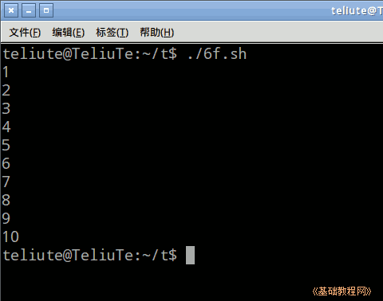
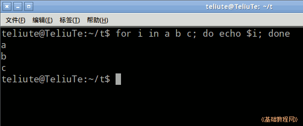
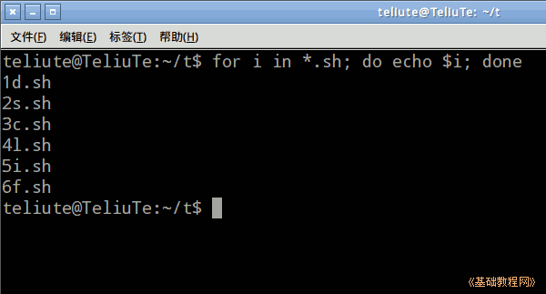
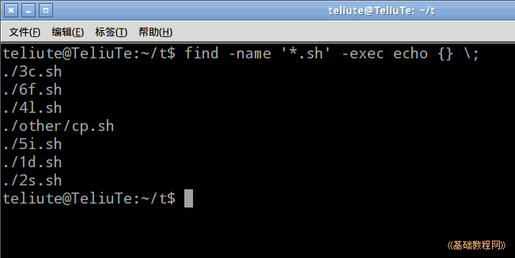
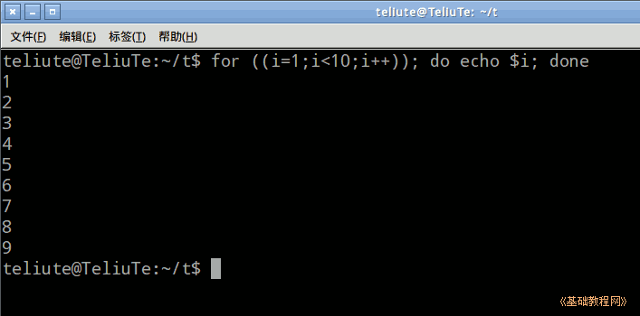

Bash Shell 脚本编程基础
作者：TeliuTe 来源：基础教程网
六、for 循环 返回目录 下一课for 循环是固定次数的循环，已知循环次数，然后用for语句；
1、for 循环
1）启动文本编辑器gedit，输入第一行 #!/bin/bash ，保存文件为 6f.sh ，并设置可执行权限；
2）for i in 序列; do 命令; done ，i 依次代入序列中的值，运行do语句，输入下面的语句；
seq 10是产生1～10个数字字符串，这里也可以用 for i in {1..10}; 中间用两个点；

3）也可以直接输入序列，用空格分开，输入下面的语句；
保存运行，会依次显示 a、b、c 三个字符；

4）序列也可以是文件名，查找并显示当前目录下的文件，输入下面的语句；
*星号是通配符，代表所有文件；

5）如果要查找子目录下的文件，就需要用find命令，输入下面的语句，如果执行时间过长，按 Ctrl+C终止命令；
这句可以直接用 find -name '*.sh' -exec echo {} \; 或者干脆用 find -name '*.sh' -print

6）for ((赋值;条件;运算语句)); do 命令; done ，输入下面的语句；
这种格式与其他语言的for循环类似，只是用的双圆括号；

7）下载本课范例；
本节学习了for循环的基础知识，如果你成功地完成了练习，请继续学习下一课内容；
本教程由TeliuTe制作|著作权所有
基础教程网：http://teliute.org/
美丽的校园……
转载和引用本站内容，请保留作者和本站链接。